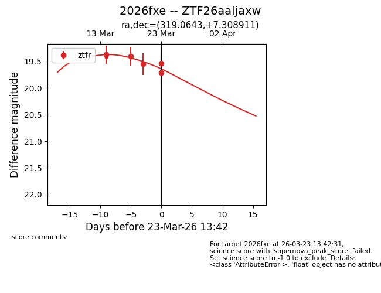
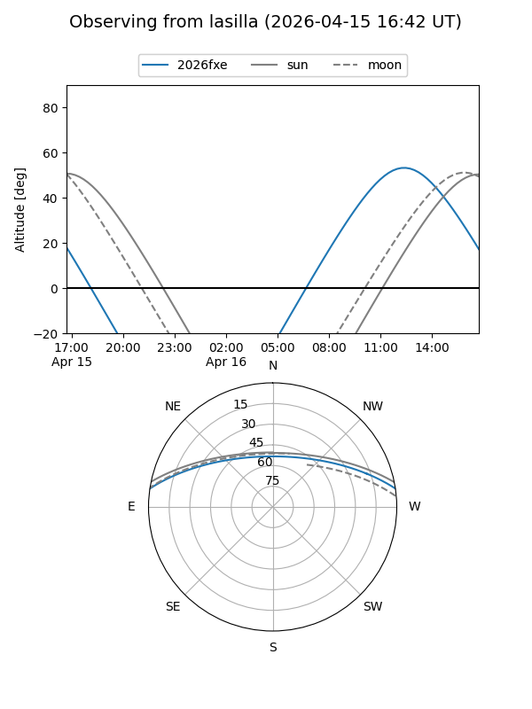
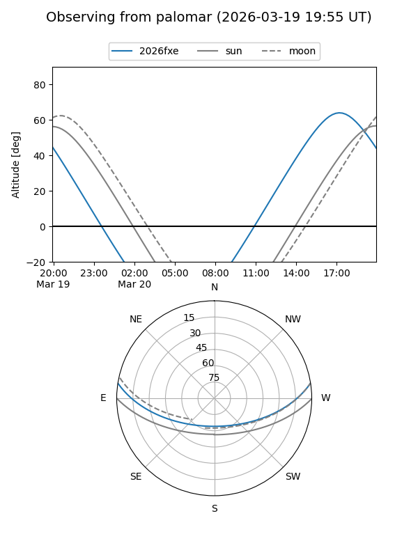
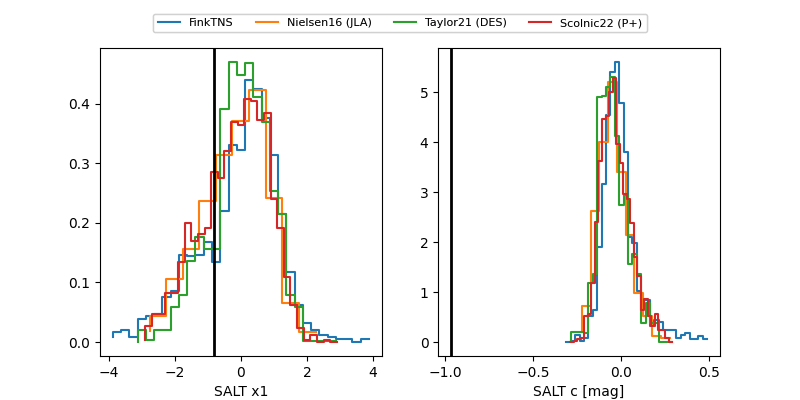

2026fxe
Target 2026fxe at 2026-03-23 13:44
Aliases and brokers:
FINK: link
Lasair: link
ALeRCE: link
TNS: link
YSE: link
alt names
ZTF26aaljaxw (ztf,fink_ztf)
2026fxe (tns,yse)
Coordinates:
equatorial (ra, dec) = 319.0643,+7.30891
equatorial (HMS+DMS) = 21:16:15.42,+07:18:32.08
galactic (l, b) = (58.3515,-27.60742)
Flags:
Photometry:
last ztfr=19.72
5 ztfr detections
Lightcurve

Visibility


Additional plots
